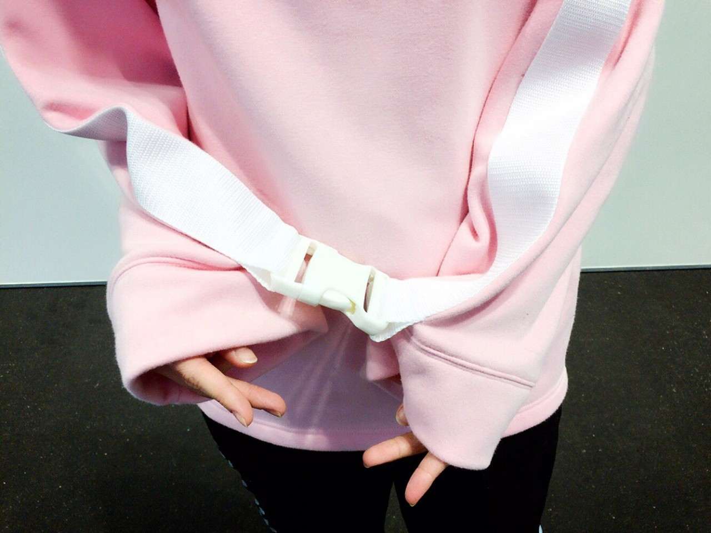

| 2017/01 21 Sat | 雪山にこもりたい。 |
スキーがしたいです生駒です(・∀・)
前回のブログ
コメントがとんでもない事になっておりました。
びっくりし過ぎてびっくりしてました。
ひとつひとつ読ませて頂きました。
皆さまの気持ちがすごく私に勇気をくれます。
ありがとうございます。
ふと、それをきっかけに自分の事考えてみたら無限ループに入り、
終いには宇宙って何で出来たんだろうまで考えてました。
うーん、うーん。
今とある曲をずっと聴いてます
心地よいですその歌は(*´꒳`*)
どんな歌かは握手会で私に聞いてみてね☆
先日の京都での全国、個別握手会ありがとうございました（＾∇＾）
今年初の握手会
雪の降る寒い中、皆さま手をかじかませ、それでも笑顔で会いに来てくださって本当にありがとうございました。
風邪はひいてないですか？
流行ってますのでお気をつけて！！
個別のお洋服はバブルスさんの

前回のブログ
コメントがとんでもない事になっておりました。
びっくりし過ぎてびっくりしてました。
ひとつひとつ読ませて頂きました。
皆さまの気持ちがすごく私に勇気をくれます。
ありがとうございます。
ふと、それをきっかけに自分の事考えてみたら無限ループに入り、
終いには宇宙って何で出来たんだろうまで考えてました。
うーん、うーん。
今とある曲をずっと聴いてます
心地よいですその歌は(*´꒳`*)
どんな歌かは握手会で私に聞いてみてね☆
先日の京都での全国、個別握手会ありがとうございました（＾∇＾）
今年初の握手会
雪の降る寒い中、皆さま手をかじかませ、それでも笑顔で会いに来てくださって本当にありがとうございました。
風邪はひいてないですか？
流行ってますのでお気をつけて！！
個別のお洋服はバブルスさんの
珍しくぴんく
20年ぶりくらいに着ました笑

これ、袖ががっちゃんこなるの。
超可愛い
途中ユニバライブで被ったスヌーピーさんを召喚致しました。
このお洋服に似合うのです。
あ、そう言えば髪切りました（＾∇＾、）
なんかね、
去年から急激に髪の毛の事がニュースになったりして、おぉ、どうしたニュースさんと思っておりまして、
髪の毛伸ばしてるの、何気な〜く大人化計画と申してみたり、
モバメにいろいろつぶやいてみたり。
でもね、気持ちの答えが出ました笑
髪の毛もおしゃれのひとつ。
今の内にしか出来ないおしゃれを、
お洋服も髪の毛もしたいと思っているので。
だから、いこまふぁむの皆さま。
いつも振り回しちゃって申し訳ないですが(´ω｀)
そんな私をどうぞよろしくお願いします(*´꒳`*)
ではっ
へばなっ☆彡
コメント(918)
2017/01/21 13:42